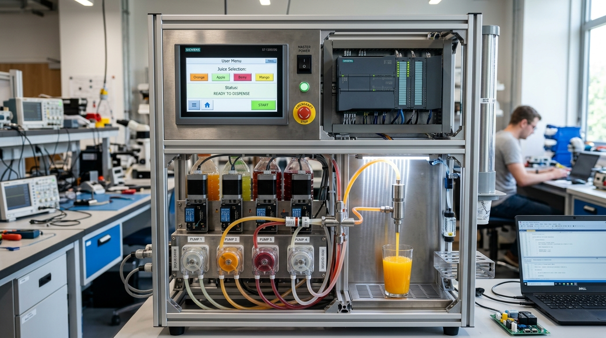

PROJECT 01
PLC - Juice Vending Machine
Designed and programmed an automated juice dispensing machine powered by Programmable Logic Controllers (PLC). The system automates beverage selection, volume regulation, and sanitary dispensing without human intervention.
Key Engineering Tasks:
- • Control Logic Design: Developed ladder logic routines to read user input switches, handle emergency halts, and sequence multi-stage pumping cycles.
- • Sensing & Actuation: Configured liquid level sensors and cup presence switches to prevent spills and dry runs.
- • Dispensing Precision: Calibrated peristaltic pumps and electric solenoid valves to dispense exact volumetric quantities of juice reliably.